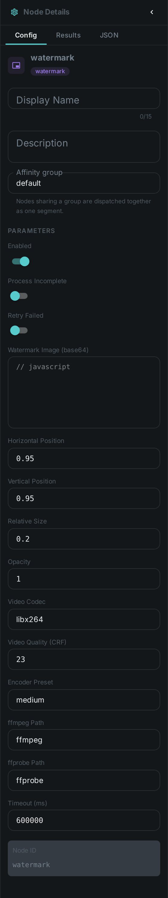
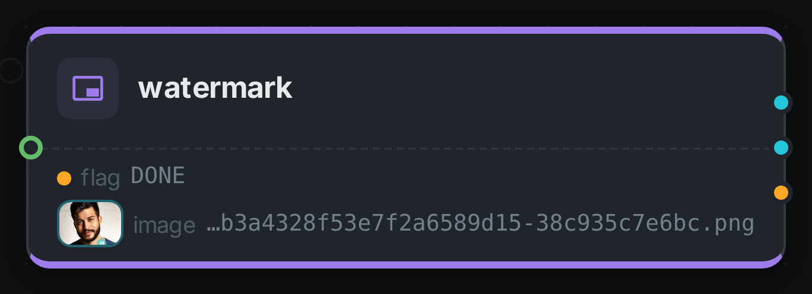
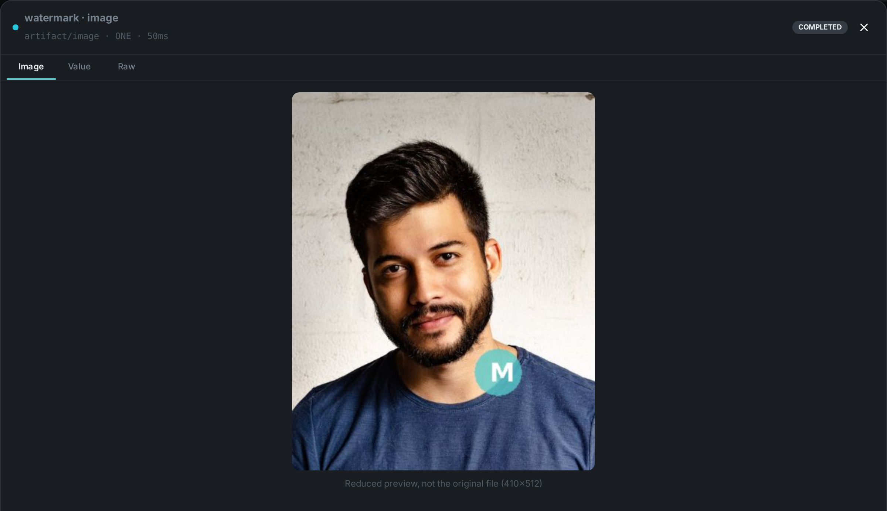

The watermark node stamps your own image onto an asset — a logo, a copyright mark, a "preview"
badge, a rating overlay. Unlike the analysis nodes, which describe a property of the media, and
unlike Image Generation, which invents new pixels, watermark marks the media it
was given: it composites the overlay you configure onto the asset’s own frames and hands the result
downstream.
It handles both stills and video. A picture is redrawn in-process, and a clip is passed through
the ffmpeg overlay filter — the picture is re-encoded, because burning in an overlay changes
pixels, but the audio track is copied through untouched rather than transcoded a second time.
The original file is never modified. The marked copy is written to the worker’s local cache, so a watermark node can be added to an existing pipeline without any risk to the archive.
Kind |
|
Applies to |
Image and video assets. Audio and documents are skipped |
Input ports |
|
Output ports |
|
Requirements |
Images: nothing. Video: |
Persists to |
|
|
Important
|
The marked file lives on the worker that produced it. Wire the artifact output into S3 Sink to upload it and register it as its own asset — otherwise it is only reachable on that one machine. |
Placement
Position is given as two relative factors rather than pixel coordinates, so one configuration works across a library of mixed resolutions.
relX |
relY |
Where the mark lands |
|---|---|---|
|
|
top-left corner |
|
|
top-right corner |
|
|
dead centre |
|
|
bottom-right with a small margin (the default) |
The factors measure how far the overlay slides within the frame, not where its left edge goes. That
is what makes 0.5 centre the mark itself and 1.0 sit it flush against the far edge — the
overlay never ends up partly outside the picture, whatever you set.
scale sizes the mark as a fraction of the asset’s width, keeping its aspect ratio, so the same
logo is proportionally the same size on a 720p clip and a 4K one. Setting scale to 0 keeps the
overlay’s own pixel dimensions instead, which will look different on every resolution.
Configuration

Set these in the panel above, or in the node’s options block in a pipeline definition:
| Option | Meaning |
|---|---|
|
The overlay image, base64-encoded (required). A full |
|
Relative position, |
|
Overlay width as a fraction of the asset width (default |
|
Scales the overlay’s own transparency, |
|
Encoder for the video path (default |
|
Video quality, |
|
Encoder speed/size trade-off, e.g. |
|
Executable locations (default |
|
Wall-clock budget per asset (default |
A misconfigured watermark — an empty or corrupt base64 blob, an out-of-range position — is reported when the pipeline starts, not once per asset.
Video
Video is the expensive path. An overlay has to be burned into the picture, so the video stream is
re-encoded; videoCrf and videoPreset control that trade-off, and ultrafast is a reasonable
choice when the marked copy is a preview rather than a master. The audio stream is copied verbatim,
and a silent clip is handled without error. The output keeps the source container, so an .mkv in
stays an .mkv out.
If ffmpeg is not installed the node fails loudly rather than skipping the asset. Skipping would
read as "this clip needed no watermark" and quietly ship unmarked video, which is the opposite of
what a watermark is for.
Because video re-encoding saturates a machine on its own, the node defaults to a concurrency of 1.
Seeing it run
Turn on Debug Mode and every node keeps what it produced, on the
card itself. Below is a real run of this node over pexels-photo-2379005.jpeg.

The strip on the card lists what each output port carried — flag, image.
Selecting one of them opens it full size.

Use Cases
-
Copyright and ownership marks — stamp a logo onto everything leaving the archive.
-
Preview and screener copies — mark a low-quality derivative as a preview so it cannot be mistaken for the master, while the original stays untouched.
-
Provenance badges — combine with an analysis node’s verdict to visibly flag AI-generated or low-quality material.
-
Client branding — one pipeline per customer, each with its own overlay in its own node configuration.
A typical graph is source → watermark → s3-sink: mark the asset, then publish the
marked copy as a new asset with its own storage location.